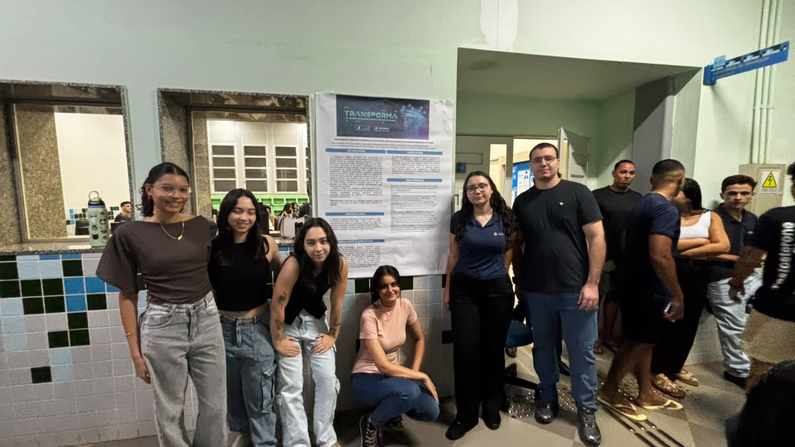
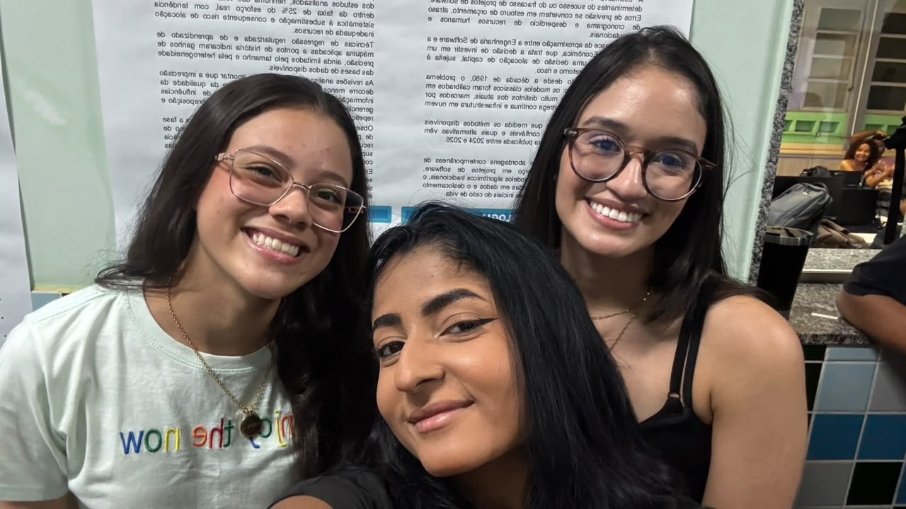
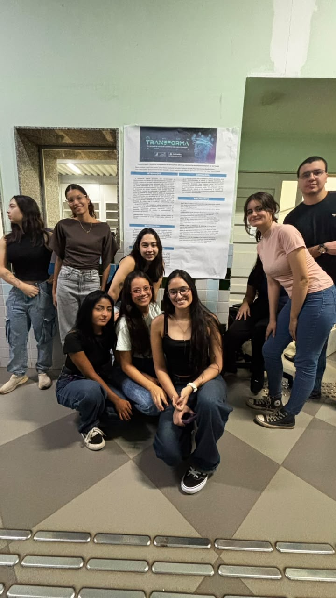

INTELIGÊNCIA ARTIFICIAL E DESENVOLVIMENTO
Produtividade e Impactos Econômicos da Inteligência Artificial Generativa no Desenvolvimento de Software
Estudo investiga como ferramentas de IA podem modificar a rotina dos desenvolvedores e a produtividade das equipes.
ConeTech | 2026
Por Bruna Guedes, Camila Gonçalves e Giovana Florentino | 07/10/2026

Como a IA está mudando a programação?
A inteligência artificial generativa passou a oferecer recursos que auxiliam na escrita de código, na identificação de erros e na explicação de conceitos de programação. Essas ferramentas podem apoiar tanto estudantes quanto profissionais experientes.
O projeto investiga, por meio de uma revisão da literatura, os impactos dessas tecnologias na produtividade, na eficiência e na organização do trabalho de desenvolvimento de software.
Mais produtividade significa sempre melhores resultados?
A utilização de ferramentas de IA pode acelerar tarefas repetitivas e ajudar os desenvolvedores a encontrar soluções para determinados problemas. Isso pode liberar tempo para atividades que exigem análise e planejamento.
Entretanto, o código gerado automaticamente precisa ser revisado. Uma resposta aparentemente correta pode conter erros, falhas de segurança ou soluções inadequadas para o sistema em desenvolvimento.
Impactos no trabalho dos desenvolvedores
O uso dessas ferramentas também pode modificar as habilidades exigidas no mercado. Além de saber programar, o profissional precisa avaliar as sugestões da IA, identificar limitações e compreender o funcionamento do código utilizado.
Outro ponto importante é evitar a dependência excessiva das ferramentas. A compreensão dos fundamentos da programação continua sendo necessária para solucionar problemas e manter aplicações de qualidade.
Ferramentas relacionadas ao tema
O GitHub Copilot é uma ferramenta que oferece sugestões de código e ajuda aos desenvolvedores durante a programação. Ele é uma solução semelhante ao tema estudado porque busca apoiar a escrita e a compreensão do código.
Outra alternativa é o Gemini Code Assist, que oferece assistência para gerar e completar código, explicar trechos e ajudar na depuração. As duas ferramentas mostram algumas formas de aplicação da IA no desenvolvimento, mas seus resultados ainda precisam ser conferidos por quem programa.
Para comparar essas soluções, seria importante observar o tempo gasto em tarefas semelhantes, a qualidade do código produzido e o trabalho necessário para revisar e corrigir os resultados. Assim, a produtividade não seria avaliada apenas pela velocidade de geração do código.
Pontos positivos e desafios
Entre os benefícios investigados estão a possibilidade de agilizar tarefas, facilitar o aprendizado e apoiar a resolução de problemas. Esses fatores podem contribuir para melhorar o fluxo de trabalho de uma equipe.
Por outro lado, o uso da IA exige atenção à qualidade do código, à segurança e à manutenção dos sistemas. Uma possibilidade de aprofundamento seria realizar testes com desenvolvedores, comparando tarefas feitas com e sem o auxílio dessas ferramentas.
Galeria de imagens


Equipe do projeto
O grupo é formado por Clara Castro Santos, Larissa Rocha Cavalcante de Castro, Matheus Carvalho Pina, Ana Carolina Guedes Santos, Luísa Castro Santos e Kariny Ferreira de Melo Picolotto.
Autorização para publicação
As fotografias publicadas nesta página foram autorizadas pelos responsáveis.